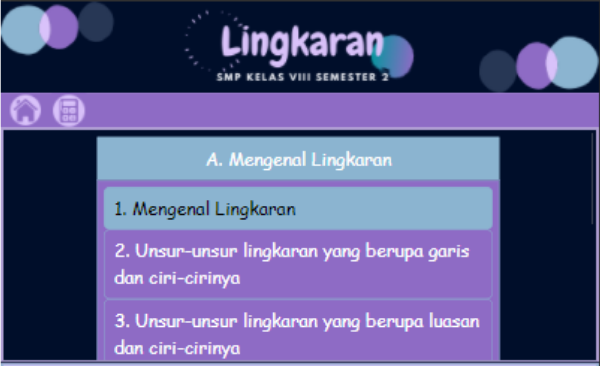

Tombol Navigasi untuk Daftar Materi Keterangan:
Petunjuk nomor 1 : Jika anda menekan tombol tersebut maka anda akan kembali ke halaman awal atau halaman utama dari aplikasi ini,
Petunjuk nomor 2 : Tombol untuk memunculkan kalkulator,
Petunjuk nomor 3 : Tombol navigasi yang berisi daftar Subbab materi yang disajikan pada aplikasi ini,
Petunjuk nomor 4 : Tombol navigasi Subbab 1 yang apabila anda tekan akan menampilkan daftar materi yang disajikan pada Subbab 1 seperti gambar di bawah ini dan anda bisa menggesernya ke atas ataupun ke bawah untuk melihat daftar materi yang lengkap pada Subbab 1 tersebut.

Petunjuk nomor 5 : Tombol untuk menyembunyikan daftar materi pada halaman kuis.
Tombol Navigasi untuk Pindah Halaman Keterangan:
Petunjuk nomor 1 : Jika anda menekan tombol tersebut maka anda akan berpindah ke halaman sebelumnya,
Petunjuk nomor 2 : Jika anda menekan tombol tersebut maka anda akan berpindah ke halaman selanjutnya.
Tombol klik Petunjuk
Petunjuk Pengerjaan Soal:
Perhatikan gambar pada soal, apabila terdapat gambar pada soal
Baca dan pahami soal sebelum menjawabnya
Masukkan jawabanmu pada kolom jawaban seperti ini
Ketika ingin memeriksa jawaban yang sudah diisi maka silakan klik tombol
Klik tombol di atas untuk melihat salah satu contoh petunjuk dari penggunaan fitur yang terdapat pada aplikasi ini!